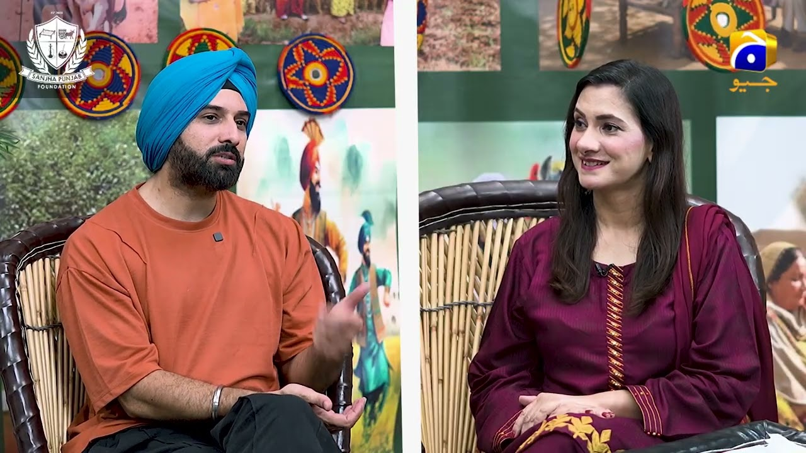
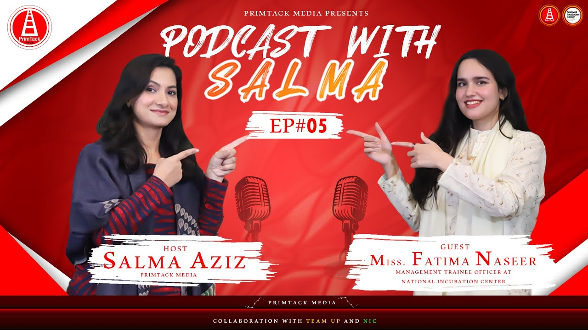
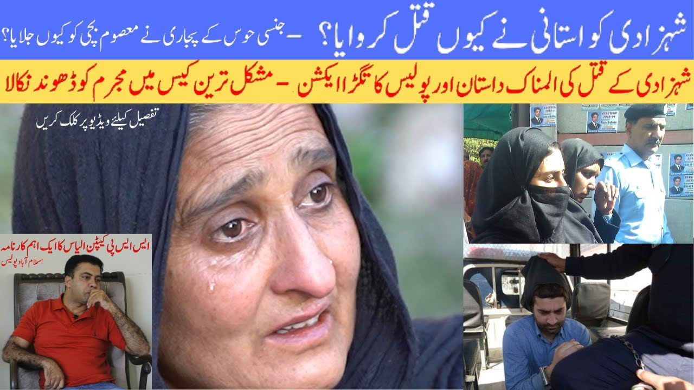

BroadcastGlobal Broadcasting
GEO USA TV Sanjha Punjab Show. National-audience storytelling connecting diaspora communities to policy and culture.
Social Impact Storyteller — Communications Strategist
Content producer and strategist with 20+ years driving change — from remote communities to national broadcasting platforms.
Selected work across broadcast, state media, research & child protection

BroadcastGEO USA TV Sanjha Punjab Show. National-audience storytelling connecting diaspora communities to policy and culture.
Radio Pakistan & PID modernising state media for a digital-first audience.

PodcastConversations with founders unpacking the startup journey for a national audience.

Crisis ResponseTerre des Hommes rapid communications support for frontline protection programming.
Workplace Harrasment Act 2010
Three eras — width mapped to years active
Grassroots beginnings — building trust and craft directly within remote and underserved communities.
Strategic advisory across three tiers of government — translating field insight into institutional frameworks.
National broadcast and digital production — scaling grassroots stories to mainstream platforms.
20+
Years Active
3
Tiers of Government Managed
50+
High-Profile Interviews
2
Core Master / Cert Frameworks